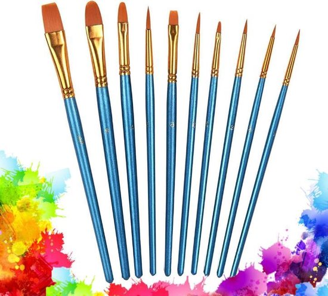

media
bleek
bleek van de plusBleek is in vrijwel elke supermarkt te koop. Ik gebruik zelf de bleek van Glorix, maar ook het thuismerk is prima te gebruiken. Let wel op dat je dikke bleek aanschaft en geen verdunde versie.
materialen
kwasten
 kwasten op bol.comDit setje kwasten is perfect om mee te beginnen. De kwaliteit van materialen maakt een groot verschil. Echter merk je hier als je net begint niet veel van. Bespaar daarom geld en begin met een simpele set kwasten. Je kan later altijd nog investeren in betere en duurdere kwasten. Als je met bleek wilt werken zijn deze zeker perfect omdat de bleek de haartje niet aan zal tasten. Eenzelfde soort setje kwasten is ook bij de action verkrijgbaar.